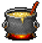
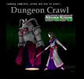
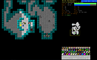
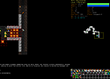

StoneSoup
Dieser Artikel wurde für die folgenden Ubuntu-Versionen getestet:
Ubuntu 16.04 Xenial Xerus
Zum Verständnis dieses Artikels sind folgende Seiten hilfreich:

Dungeon Crawl Stone Soup oder DCSS  ist ein grafisch ansprechender SDL-Client für das Rogue-like PC-Rollenspiel Dungeon Crawl, welches normalerweise im Textmodus gespielt wird. Stone Soup lässt sich komfortabel mit Maus und Tastatur spielen und inkludiert das komplette Crawl Spiel. Stone Soup bietet aber einige Besonderheiten gegenüber ähnlichen Spielen wie Nethack, z.B. Komfortfunktionen wie automatisches Dungeon-Erforschen und mehr Freiheiten bei der Charakterentwicklung. Für eine ausführlichere Analyse siehe die Linksammlung unten. Die Hilfeseiten im Spiel werden mit dem Fragezeichen "?" aufgerufen.
ist ein grafisch ansprechender SDL-Client für das Rogue-like PC-Rollenspiel Dungeon Crawl, welches normalerweise im Textmodus gespielt wird. Stone Soup lässt sich komfortabel mit Maus und Tastatur spielen und inkludiert das komplette Crawl Spiel. Stone Soup bietet aber einige Besonderheiten gegenüber ähnlichen Spielen wie Nethack, z.B. Komfortfunktionen wie automatisches Dungeon-Erforschen und mehr Freiheiten bei der Charakterentwicklung. Für eine ausführlichere Analyse siehe die Linksammlung unten. Die Hilfeseiten im Spiel werden mit dem Fragezeichen "?" aufgerufen.
|  |  |  |
| Titel | Screenshot | Screenshot |
Installation¶
Aus den Paketquellen¶
Ab Ubuntu 11.04 ist das Spiel in den regulären Ubuntu-Paketquellen enthalten. Es muss nur eines von beiden Paketen installiert werden [1]:
crawl (universe)
 mit apturl
mit apturl
Paketliste zum Kopieren:
sudo apt-get install crawl
sudo aptitude install crawl
oder
crawl-tiles (universe)
mit apturl
Paketliste zum Kopieren:
sudo apt-get install crawl-tiles
sudo aptitude install crawl-tiles
Fremdpaket¶
Möchte man die jeweils aktuellste Version haben, kann man sich ein DEB-Paket für Ubuntu direkt von der Projektseite herunterladen und manuell installieren [2].
Hinweis!
Fremdpakete können das System gefährden.
Hinweis zu development builds¶
Wer mit der stabilen Version (stable release) nicht zufrieden ist, sondern sich die aktuelle (instabile) Entwicklerversion (development builds) mit den neusten Features ausprobieren möchte, benötigt die Versionsverwaltung Git. Eine Anleitung dazu befindet sich auf der Stone Soup Homepage unter Downloads .
Ein crawl-ref Verzeichnis anlegen [3]:
git clone git://crawl-ref.git.sourceforge.net/gitroot/crawl-ref/crawl-ref
Den "Master-Branch" herunterladen:
git checkout master
Submodule installieren mit:
git submodule update --init
In das source - Verzeichnis wechseln und kompilieren:
make TILES=y
Anschließend durch Eingabe von
./crawl
das Spiel starten. Es ist möglich, die stable und die development Version gleichzeitig am Rechner zu haben, da sich beide in unterschiedlichen Verzeichnissen befinden. Da an der Entwicklerversion ständig gearbeitet wird, kann man sich (auf das Risiko hin eine instabile Version zu bekommen) so oft man will mit dem Befehl:
git pull
die neusten Änderungen herunterladen (man muss sich dazu im crawl-Verzeichnis befinden) und anschließend das Spiel neu kompilieren mit:
make TILES=y

Infobox¶
| Dungeon Crawl Stone Soup | |
| Genre: | Rogue-like Rollenspiel |
| Sprache: | |
| Veröffentlichung: | 2006 |
| Publisher: | OpenSource |
| Läuft mit: | nativ |


- Erstellt mit Inyoka
-
 2004 – 2017 ubuntuusers.de • Einige Rechte vorbehalten
2004 – 2017 ubuntuusers.de • Einige Rechte vorbehalten
Lizenz • Kontakt • Datenschutz • Impressum • Serverstatus -
Serverhousing gespendet von